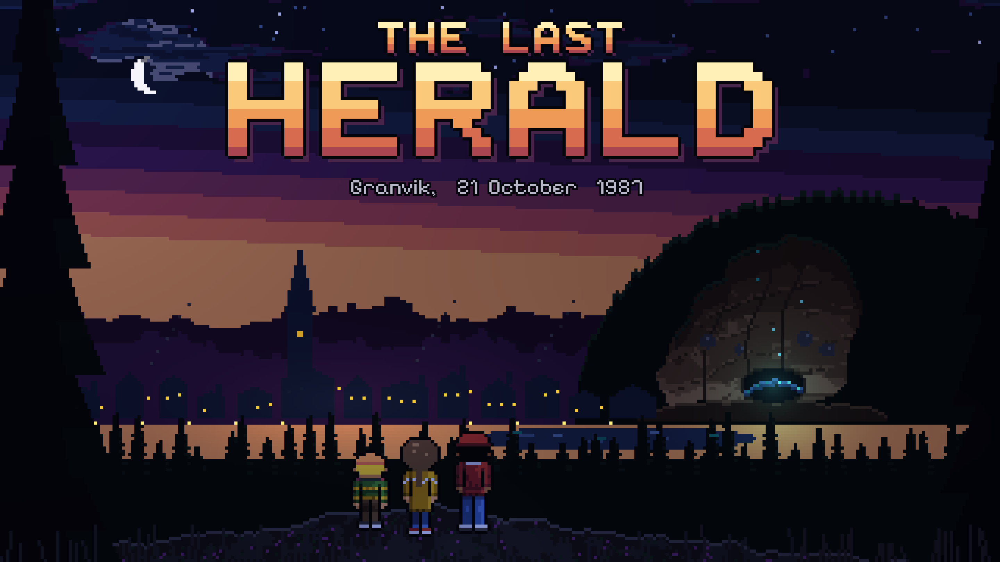

Sofia
13
Wants to be an astronomer and writes everything down in her notebook. She's the one with the plan, and a bit bossy about it.

1987: three kids from a small Swedish town go looking for what's buried under the hill.
FreeNo adsNothing to buyPlays offlineFor ages 9 and up
The Last Herald takes place in Granvik, a small sawmill town in the north of Sweden, in October 1987. It's dark by five, and a week ago a storm brought down a hillside out in the forest. Ever since, Sofia's compass has pointed there instead of north.
Sofia is thirteen and wants to be an astronomer, so she has to find out why. Her little brother Benjamin refuses to be left behind, and their friend Danny is up for anything. They'll just go and have a look, and be home by six.
I won't give away what they find. Old Holm, the hermit the whole town laughs at, has been saying for fifty years that the hill out there hums on cold nights, and he turns out to be worth listening to. The rest you find out the way the kids do: by looking around, asking questions and not leaving things alone.


Turn the sound on, all the dialogue is voiced. It plays best on a computer or a tablet. If you're on a phone, the Google Play version is better. The game is loaded from itch.io.
It's made for the Amiga 1200: all four acts, every room and every line of the story, in 256 colours at 25 frames a second on a 14 MHz 68020.
Each room is loaded from the hard drive when you walk through a door, without the music stopping. The lights still flicker, the rain and snow are done with hardware sprites, and I compared the frames with the original pixel by pixel.
You need an A1200 or A4000 with 8 MB of fast RAM and a hard drive. It also works in an emulator, and the download is set up for WinUAE and FS-UAE with no Kickstart ROM needed. It's 96 MB. I haven't tested it on a real Amiga yet, so if you try it, I'd be happy to hear how it went.

Wants to be an astronomer and writes everything down in her notebook. She's the one with the plan, and a bit bossy about it.
Loud, brave and funny, and rarely right on the first try. He does the climbing, the lifting and most of the talking.
Sofia's little brother, who refused to stay home. He has a Walkman and exactly one tape for it: a self-help cassette his uncle sent from America.
It starts in Granvik, and each act takes you somewhere new.
Switch between them whenever you want, split them up and pass things from one to another. Each of them can do things the others can't.
A ship's mind that learned to talk from a self-help cassette, and finds everything motivating. Even falling into the sun.
All the dialogue is voiced in English. The text is in English, Swedish, French, Italian, German and Czech.
Every room and character, in the style of the old LucasArts adventures.
You solve them by looking around, talking to people and combining things. If you get stuck, Sofia's notebook has hints.
Tap or click to walk, and to look at, use or talk to things. Drag what you're carrying onto whatever you want to use it on.
The game saves by itself, and there are five slots for your own saves.
I don't want my kids playing games with ads, accounts or tracking, so this one has none of them. No purchases either, and it works offline.